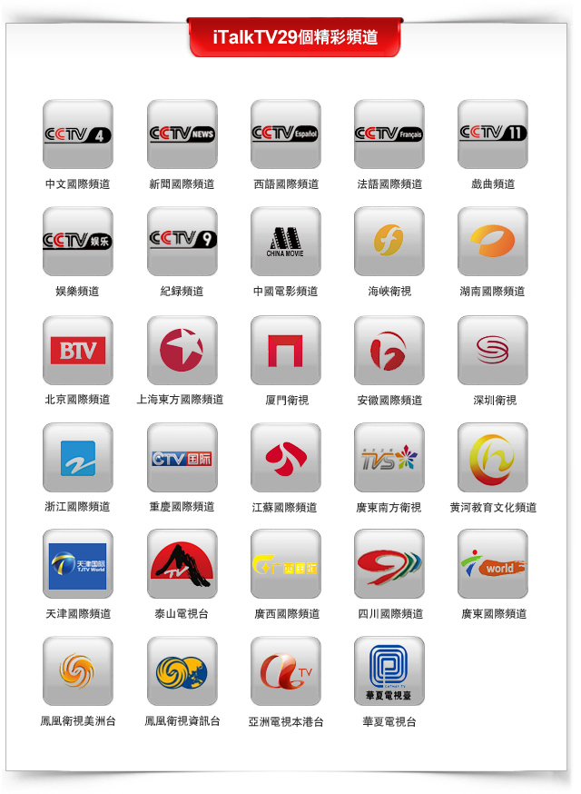

长城平台29个精彩中文频道正式登陆iTalkTV
（弗吉尼亚维也纳10月16日）
北京9月20日电：经由中华人民共和国广播电影电视总局核准，中视国际传媒（北京）有限公司与iTalkTV于9月20日在北京正式签署合作协议。宣布自即日起，中视国际传媒（北京）有限公司授权iTalkTV面向海外播出长城平台29个电视频道，同时双方就携手拓展海外市场、服务全球华人表达了浓厚愿望。
据了解，此次合作签署播出的29个频道（具体见下文）包括中国中央电视台国际中文频道、英语新闻频道、凤凰美洲和大陆所有地方国际台等，海外华人可以通过iTalkTV收看来自中国大陆和港澳台等地的中文电视节目。
中视国际传媒总裁魏平先生表示："长城平台是中国频道向海外播出的最重要平台，是海外观众通过电视了解中国最重要的窗口。我们很高兴通过此次长城平台与iTalkTV的合作，将中央电视台及国内各地国际频道众多优质、精彩的节目带给海外华人。我们相信这将进一步丰富海外观众的电视娱乐生活。"
iTalk CEO赵捷先生称："iTalkTV将立足海外深厚运营经验、营销网络及先进的互联网技术把原汁原味的中国声音传递给所有海外华人，双方将共同维护、开发海外华语电视市场，使海外华人能够持续的享受高品质电视服务。"
iTalkTV自问世近一年来，依凭其高清的画质，多元的节目和运营级的服务质量受到了海外华人的热烈追捧，获得了巨大的市场成功，成为海外华人和北美地区观众了解中国的重要渠道。
此次协议涉及频道如下：
更多详情，请登录www.iTalkBB.com 或拨打24小时服务热线1-877-482-5522查询。
关于iTalkBB：
iTalkBB新电信是享誉全美的优秀通讯品牌，是国际电讯行业的领导和先驱。其以顶级全球网路和前沿技术为依托，以最具竞争力的价格为客户提供高质、清晰的本地、国内及国际长途电话服务，以及高清中文电视直播、回播与点播服务。其电话业务能完全取代传统家庭电话，并享受多重免费提供的附加功能如来电等待、三方通话、来电显、来电转接等。另有独一无二的功能-中国大陆、台湾、香港、南韩当地号码，当地亲友只要拨打此号码，就能接通到在美国的亲友，而无需支付国际长途费用。 iTalkBB的高清中文电视服务，自问世以来便受到了广泛的好评和欢迎。超过五十个热门频道支持实时直播与48小时回看，海量最新电影电视剧综艺节目免费无限点播，让用户以最低价格尽享华语娱乐。 iTalkBB新电信将不断努力，与您共同成就更美好的生活。 iTalkBB设有24小时中英文的客户服务热线??1-877-482-5522和官方网站www.iTalkBB.com，一年365天提供不间断的服务与更多信息的查询。